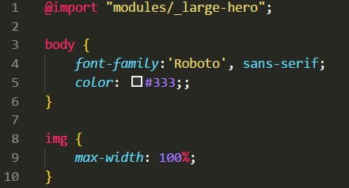

PostCSS and CSS Architecture
- PostCSS We can create a 'temp' or whichever folder to store the changes which we want to occurr in the new css file which we want to work with. In order to create a new css file which will be our source (directly bound with the index.html data, we can create the 'temp' directory.
- Then, in the
gulpfile.js file, create the gulp.task which will then channel the change from the source file (original
stylesheet) into the destination file (temporary filesheet).
This is how the code looks like in the travel-site example: - In order not to keep the one stylesheet too messed up, its a good practice to create other stylesheets. For instance,
in the 'travel-site' project, we insert an additional directory(modules) and inside of it another stylesheet.
We will name the new stylesheet '_blabla.css'. The use of _ normally signalizes to other developpers that this should be a transitional stylesheet. This is a 'partial' file which wont be used in itself, but imported into another file.
In order to do this we use the keyword @import. The @import is a native css code which we do not want the browser to directly load it. Rather we want the code to go to the partial file and use the css which is there.
This is an example of how this can be done in the main css file:

Note that @import has to be placed right at the beginning of the css file. - To make magic happens we will install postcss!
- First install gulp-postcss npm install gulp-postcss --save-dev
- Then install the import functionality with npm install postcss-import --save-dev
- In the gulpfile.js add the following code (note that the cssImport should come first on the array):

- in order to normalize or to reset the css, I can use the
@import: "normalize.css" in the styles.css file: